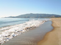

Pagiano di Sotto is surrounded by wild and unspoiled countryside with a stunning coastline which retains its lush feel even in the hottest months. Part of the Maremmana plain is preserved as a national part known as L'Uccellina and is home to rare plants, birds and animals. It can be visited on foot or horseback, accompanied by knowledgeable guides. All this natural beauty and yet you are so near to all the amenities you might need. There are the three villages of Montemassi, Sassfortino and Roccatederighi within 5 min's offering local produce, superb restaurants, cafes and culture. Within 15 min's are the hospital, supermarkets, banks, garages etc. There are fantastic local festivals in the summer months.
It is an ideal starting point for tours in medieval Tuscany, with its interesting villages and cities of art such as Sienna (45 min's) or Florence ( 90 min's). There are many medieval castles, archaeological sites and museums from the Italian renaissance within a short driving distance. Mass Marittma (15 min's) is the finest historical town of Maremma. You can even take a boat day trip to the Island of Elba, or sail yourself from Castligoncello (25 min's).There are stunning crystal clear water beaches within 30 min's which are blue flag rated, clean, sandy and free also some offer water sports. Umbrellas can be hired in areas such as Castiglione della Pescaia and Follonica. Just 10 min's away there is use of a hotel swimming pool. Trekking and cycling ar on your doorstep with bicycles for hire in the local villages. The local thermal baths of Saturnia or Petriolo are both 45/55 minutes drive and are truly worth the visit.
There is detailed information on all the places of interest and activities at the Villa/apartments. Please do not hesitate to get in contact for any further information you require before booking.

enquiries@villamaremma.co.uk UK: 0044(0)1935 813882 UK MOBILE: 0044 (0)771 433 6367